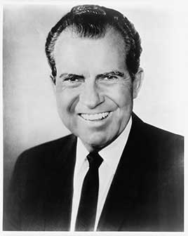

Ended the draft and U.S. combat in Vietnam, opened relations with China, created the EPA and took the dollar off gold. Resigned over the Watergate cover-up before the House could vote to impeach him.
Shaded areas show the years in office, with a few years before and after for comparison. Budget years ran July to June until 1976 (now October to September), so each year's figures cover parts of two calendar years.
June 30, 1968 (end of fiscal 1968): $347.58 billion → June 30, 1974 (end of fiscal 1974): $475.06 billion
Daily debt figures don't exist before 1993, so Nixon's numbers use the fiscal years closest to his term.
Debt as a share of GDP. Above 100% means the debt is bigger than a year of everything the country produces.
Money borrowed each budget year (below the line) or paid down (above).
Jan 1969: 3.4% → Aug 1974: 5.5%. Monthly rates; the chart shows yearly averages.
How much prices rose each year (consumer price index).
What everyday prices and paychecks did while in office.
Prices use the consumer price index (MeasuringWorth). The minimum wage is the federal rate set by Congress.
346 orders, numbered 11452–11797.
Source: National Archives: Nixon executive orders (full list of every order).
Banned discrimination in federal hiring based on race, color, religion, sex, national origin, disability or age, and required every agency to run an affirmative program.
Federal RegisterOrdered federal agencies to inventory and protect historic buildings and sites on federal land.
Federal RegisterThe 'Nixon shock': froze wages, prices and rents nationwide to fight inflation, announced alongside ending the dollar's link to gold.
Federal RegisterCreated a national program to help minority-owned businesses win federal contracts and financing.
Federal RegisterSet the first federal rules limiting off-road vehicles on public lands to protect land and wildlife.
Federal RegisterRewrote the rules for classifying government secrets and set schedules for declassifying them.
Federal RegisterA pardon wipes out the punishment for a federal crime; a commutation shortens a sentence but leaves the conviction. Counts are by federal fiscal year. Nixon himself was pardoned by President Ford on September 8, 1974.
Source: U.S. Dept. of Justice, clemency statistics, which lists every recipient with the crime and sentence.
The crime: Jury tampering, and fraud involving the Teamsters pension fund (convicted 1964)
Sentence: 13 years in federal prison
Why it drew attention: The Teamsters union later endorsed Nixon in 1972. The release came with a condition barring Hoffa from union leadership until 1980.
SourceThe crime: Extortion (convicted 1970)
Sentence: 12 years in federal prison
Why it drew attention: A reputed New Jersey mob figure released on the grounds that he was terminally ill; he died in 1973. The release drew criticism and later scrutiny.
SourceThe same checklist for every president. Tap a row for details and sources.
The House Judiciary Committee approved three articles of impeachment (obstruction of justice, abuse of power, contempt of Congress) on July 27–30, 1974. Nixon resigned on August 9, before the full House voted.
SourceThe Watergate grand jury named Nixon an unindicted co-conspirator in 1974. Special prosecutors believed a sitting president could not be indicted. Ford's pardon ended any case after he left office.
SourceNever charged, because of the pardon.
Ford granted a 'full, free, and absolute pardon' for any federal crimes Nixon may have committed as president, on September 8, 1974.
SourceWatergate investigations charged 69 people and convicted 48, including Attorney General John Mitchell, chief of staff H.R. Haldeman and domestic adviser John Ehrlichman. Vice President Spiro Agnew resigned in 1973 and pleaded no contest to tax evasion in a separate bribery investigation.
SourceArchibald Cox was fired on Nixon's orders on October 20, 1973. Leon Jaworski replaced him and won United States v. Nixon (8–0, July 24, 1974), forcing release of the White House tapes.
SourceThe tapes show Nixon approving a plan to have the CIA block the FBI's Watergate investigation (June 23, 1972). The second article of impeachment cited attempts to use the IRS, FBI and Secret Service against political opponents.
SourceWhat happened, what was proven, and how it ended.
Operatives of Nixon's re-election campaign were arrested breaking into Democratic headquarters on June 17, 1972. Nixon then directed a cover-up, including hush money and trying to use the CIA to halt the FBI. Taped conversations proved it, and he resigned.
Outcome: Resigned; 48 people convicted; pardoned by Ford.
SourceNixon ordered the firing of special prosecutor Archibald Cox, who had subpoenaed the tapes. Attorney General Elliot Richardson and his deputy William Ruckelshaus resigned rather than carry out the order. Solicitor General Robert Bork fired Cox.
Outcome: Public outrage led to the first impeachment resolutions; a court later ruled the firing illegal.
SourceThe White House kept lists of political opponents, journalists and celebrities, and discussed using the IRS and other agencies against them.
Outcome: Cited in the second article of impeachment.
SourceA secret White House unit broke into the office of Daniel Ellsberg's psychiatrist, looking for material to discredit the leaker of the Pentagon Papers.
Outcome: Ehrlichman, Colson, Liddy and others were convicted.
SourceThe U.S. bombed Cambodia for over a year while falsifying records to hide it from Congress and the public.
Outcome: A proposed article of impeachment over it was rejected by the House Judiciary Committee, 26–12.
SourceWidely quoted remarks, with the context they were said in.
People have got to know whether or not their president is a crook. Well, I'm not a crook.
Well, when the president does it, that means that it is not illegal.